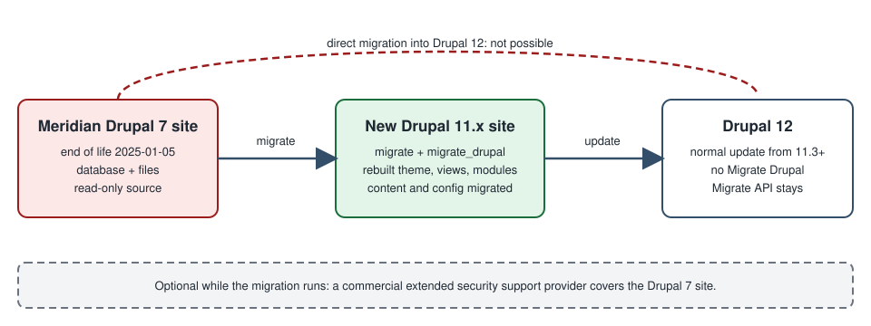

Drupal: Migrating from Drupal 7
|
This content was generated with the assistance of AI and should be verified against the official documentation before being relied on in production. |
Drupal 7 was released in January 2011 and its security support ended on 5 January 2025. A site that is still on it receives no security fixes and no compatibility updates from the Drupal Security Team, and the PHP versions it can run on are themselves out of support. Moving such a site to a current Drupal is not an update. Drupal 8 changed the storage, the code architecture, the theme layer and the module API so completely that the project has no in-place upgrade from 7: the data is migrated into a new site, and the theme, the views and most of the contributed modules are rebuilt. This page explains the end of life, the tooling core provides for the migration (the migrate, migrate_drupal and migrate_drupal_ui modules and the contributed Migrate Upgrade module), how to audit the old site, the three upgrade approaches the official guide describes, the Drush and browser procedures, what is rebuilt by hand, the removal of the Migrate Drupal modules in Drupal 12 and the commercial extended-support option for sites that cannot move in time.
It was written against Drupal 11.4.x (11.4.0 was released on 1 July 2026), Drush 13 or 14 and PHP 8.3 or later, and the facts were checked against the official documentation, the release notes and the project pages on 2026-10-30. Drupal 12.0.0 is scheduled for the week of 2026-12-07 and the end of life of Drupal 10 for 2026-12-09, so both are described as upcoming events and have not happened yet. A migration project that starts now targets Drupal 11.4.
The running example is the Meridian Museum, a fictitious regional science museum. Its eleven-year-old Drupal 7 site holds exhibitions, events and news as content types, a taxonomy of topics, around forty thousand collection records stored as nodes, a handful of contributed modules and a custom theme. This page follows its move to the new Drupal 11 site that the rest of this sub-section builds (the meridian theme, the meridian_collection module). Importing a spreadsheet or a feed is a different task, covered in The Migrate API; the plugins explained there are the same ones that this path is made of.
Who works on a Drupal 7 migration
-
A project owner or content lead decides what is worth keeping, signs off the audit and accepts the migrated content.
-
A site builder audits the modules, recreates configuration that does not migrate (views, blocks, panels, rules) and checks the result in the admin UI.
-
A developer sets up the destination, runs and customises the migrations, writes custom migrations for data the core path does not cover and rebuilds the theme.
-
An administrator provides the database access and the files, runs the migration on staging and production and decides when the old site goes read-only.
Drupal 7 end of life
The Drupal Association’s end-of-life page states that Drupal 7 security support ended on 5 January 2025, which was the final extension of a date that had been moved several times, and that from then on Drupal 7 "will no longer receive security updates or compatibility updates". The consequences for a site owner are practical rather than abstract:
-
Security. New vulnerabilities in Drupal 7 core and its contributed modules are no longer published as advisories by the Drupal Security Team, and attackers can reverse engineer fixes shipped for newer versions. Contributed module maintainers may also abandon their Drupal 7 branches.
-
Compliance. The official page warns that running an unsupported platform can put a site out of compliance with standards such as FedRAMP, PCI, HIPAA and SOC 2. If a migration cannot finish in time, the page recommends informing customers, managers and security officers how vulnerabilities will be handled.
-
Platform. Drupal 7 was written for PHP 5.x and tolerates later PHP versions only with patches; hosting companies are removing the PHP versions it needs, and its database layer targets older database server versions. Drush 8, the last line that works with Drupal 7, reached its own end of life in January 2025 (see Drush).
-
Editor. Drupal 7 sites that used CKEditor 4 depend on an editor that is itself out of support; Drupal 10 and later use CKEditor 5 (see Text formats and CKEditor 5).
Older books and tutorials describe Drupal 7 as a supported version. Drupal 10 Masterclass (2023) lists Drupal 7 as still supported and Drupal 11 as a future release. Both statements are out of date: Drupal 7 is past its end of life, Drupal 11 has been the recommended starting point since its release, and Drupal 10 itself ends on 2026-12-09 (see Versions, release cycle and support).
Why there is no in-place update
The official overview of the upgrade states that "an update can’t simply be applied to an existing Drupal 6/7 site". The reasons are structural:
-
Drupal 8 and later keep configuration (content types, fields, roles, views, text formats) as configuration entities that can be exported to YAML (see Configuration management), while Drupal 7 stores much of it in the
variabletable and in serialised blobs. -
Drupal 7 fields live in per-field tables; Drupal 8 and later have a different entity storage with revisions, translations and typed data (see Entity API).
-
Modules were rewritten around services, plugins, routes and Symfony components (see Introduction and architecture); a Drupal 7 module does not load in Drupal 11.
-
Themes moved from PHP template files and
template.phpto Twig and libraries (see Theming overview and render pipeline).
So the process is always: build a new site, then pull the data across from the old database and files with the Migrate API. The old site is read from and never modified.

The modules involved
The official page for the Drupal 9 and later migrate modules describes the roles as follows.
| Module | Role |
|---|---|
|
The underlying framework: source, process and destination plugins and the map tables (see The Migrate API). |
|
Source plugins and migration templates that read a Drupal 6 or Drupal 7 database and map it to Drupal 10 or later. |
|
A web interface at |
|
Migration groups, migrations as configuration entities and the |
|
Drush commands. The page notes that most of its commands ( |
|
The |
The core modules ship with Drupal 11 and can be enabled directly. Because they are core modules that are only needed during the migration, treat them as temporary, as described under After the migration.
Core provides migration paths for the modules that were in Drupal 6 and Drupal 7 core. For contributed and custom modules there is a path only if the destination module (or the contributed module’s maintainers) supplied migration plugins; otherwise the data needs a custom migration.
Auditing the Drupal 7 site
The official preparation guide starts with an audit, and it is the step that decides how long the project takes.
-
Inventory the modules. List every enabled core and contributed module (the Modules page, or
drush pm-list --status=enabledon Drush 8 for Drupal 7, or the update status report atadmin/reports/updates). Include custom modules and the features exported with the Features module. -
Decide per module. For each one: is the functionality still needed; did it move into core (for example Entity Reference, Views, Media basics, Link, Telephone, Date, Image styles, Responsive images); is there a Drupal 10 or 11 version; is there a replacement; or does it have to be replaced by custom code. Modules do not always map one to one: the Drupal 7 Block module became Block and Custom Block, Field Collection is replaced by Paragraphs and Profile by profile types.
-
Use tooling. The Upgrade Status module checks the availability of Drupal 10 and 11 versions of installed projects; the project’s own Drupal 7 report shows the update status of modules that must be brought to their latest release before the migration.
-
Count the content. Number of nodes per content type, users, files, taxonomy terms, comments, translations and revisions. Old and unused content is the cheapest thing to leave behind; for small sites with little content or configuration the official overview even suggests recreating the content manually, because the automated tools can be complex to set up.
-
List what does not migrate. Themes, Views and many contributed module configurations (see what migrates and what does not).
-
Read the known issues. The official "Known issues when upgrading from Drupal 6 or 7" page lists the pitfalls for Drupal 7 sources; the important ones are summarised below.
Meridian’s audit produced the following table, which drove the rest of the project.
| Drupal 7 module | Decision | Notes |
|---|---|---|
Views, Date, Link, Telephone |
Core or replaced by core |
Views is in core; Date became the |
Entity Reference, Taxonomy |
Core |
Entity references migrate to core entity reference fields. |
Field Collection ( |
Paragraphs |
Install Field Collection to Paragraphs on the destination before migrating, as the known-issues page advises. |
Pathauto, Token, Metatag |
Contributed, available for Drupal 11 |
Install on the destination so their data has somewhere to go. |
Webform |
Contributed, available |
Webform submissions can be migrated with the contributed migration support; forms need review (see Forms for visitors). |
Rules ( |
Rebuilt |
Rules works differently in Drupal 8 and later and the known-issues page says no migration exists for it. |
Custom module |
Rewritten |
Becomes |
Removed core modules deserve their own check. The destination Drupal 11 no longer contains Book, Forum, Statistics, Tour or Actions UI, which went in 11.0, nor Aggregator, Color, Quick Edit, RDF and HAL, removed in 10.0; the contributed versions exist for many of them. See Removed core modules and replacements before deciding how a Drupal 7 Forum or Book is handled.
Choosing the destination version
Because the Migrate Drupal modules are removed from core in Drupal 12 (see Drupal 12), the destination of a Drupal 7 migration is a Drupal 11.x site, today 11.4. Do not start the destination on Drupal 10: its end of life is 2026-12-09, and 10.6 is its last minor, so everything built on it would have to be upgraded again within weeks (see Upgrading from Drupal 10 to 11). The official guide’s wording, "Drupal 10 or later", predates the end of life of Drupal 10 and is not a recommendation to target it.
Create the destination with Composer as described in Installation with Composer and DDEV. The official preparation page recommends leaving it unconfigured: the Minimal profile is commonly preferred to Standard, and since 11.4 Standard no longer creates the Article and Page content types anyway. Do not create content types or fields in advance, because the migration creates them, and do not create any content, because the migration keeps the source IDs of users, nodes and terms and can overwrite what you made.
# Destination: a fresh Drupal 11.4 site, no custom configuration yet
composer create-project drupal/recommended-project:^11.4 meridian-d11
cd meridian-d11
composer require drush/drush
composer require drupal/migrate_upgrade drupal/migrate_plus drupal/migrate_tools
composer require drupal/field_collection_to_paragraphs # only if the source uses Field CollectionChoose versions of the contributed projects that declare compatibility with your core; the official page says to match them with the core version. Whether they declare Drupal 12 support cannot be settled before 12.0.0 is released, so check the project pages before the later update.
Preparing the source and the connection
The official guide asks for the following before the first run.
-
Update the source. Bring the Drupal 7 core to its latest 7.x release and update the contributed modules whose data you migrate to their latest versions, because the migration expects them.
-
Work from a backup. Do not run against the live database: restore a dump on a separate database server. The source is never modified, but a dump gives a consistent snapshot and avoids load on production.
-
Reachability. The destination host must be able to connect to the source database, and read the source files (the
--legacy-rootURL or a path on disk). -
Private files. Set
file_private_pathin the destinationsettings.phpbefore running the upgrade. -
Matching modules. The migration does not install modules. Enable on the destination the core and contributed modules whose data you want, for example Address for Addressfield data or core Forum if the source used it. A module that is not enabled shows as "not upgraded" in the review.
A second database connection named migrate holds the source credentials. Keep them out of the repository (see settings.php and environments).
<?php
// settings.local.php on the staging machine only: the Drupal 7 source copy.
$databases['migrate']['default'] = [
'driver' => 'mysql',
'database' => 'meridian_d7',
'username' => getenv('MERIDIAN_D7_DB_USER'),
'password' => getenv('MERIDIAN_D7_DB_PASSWORD'),
'host' => getenv('MERIDIAN_D7_DB_HOST') ?: 'localhost',
'port' => '3306',
'prefix' => '',
'namespace' => 'Drupal\\mysql\\Driver\\Database\\mysql',
'autoload' => 'core/modules/mysql/src/Driver/Database/mysql/',
];
// Private files of the old site must be configured before the run.
$settings['file_private_path'] = '../private';The Drupal 7 database can be a MySQL, MariaDB, PostgreSQL or SQLite dump; the connection array follows the destination’s driver rules, so a PostgreSQL source needs the matching driver and namespace.
Choosing the upgrade approach
The official page on choosing the approach describes three strategies. Its central point is that content usually migrates well, but "the configuration of your new Drupal site will most probably need some manual tasks".
| Approach | How it works | When it fits |
|---|---|---|
Simple, with manual post-upgrade steps |
Run the upgrade once, do the manual configuration (recreate Views and similar) on the new site, then publish. Rehearse on a test environment, record every manual step, and repeat the same steps on a clean installation for production. |
Smaller sites where the old site can be frozen while the new one is finished. |
Incremental |
Keep the old site live while the manual configuration is done. Re-run the migrations to pick up new and edited content. Do not change the old site’s configuration between the first and the incremental runs. |
Sites whose editors keep working, and where the manual work is long. |
Content only to staging and production |
Migrate configuration once into a development environment, finish it there and move it with configuration management through staging to production. Then migrate only content into staging for acceptance and into production at launch. Requires the Drush route. |
Teams with development, staging and production environments, Git, and a long build. This is the approach Meridian chose. |
The third approach pairs well with configuration management and deployment: configuration is developed once and deployed, while content migrations are re-run against each environment.
What migrates and what does not
The official overview states what the core path moves:
-
Configuration: content types, field definitions and instances, text formats, roles, vocabularies, menus (settings), image styles and a number of site settings.
-
Content: nodes (with revisions), users, taxonomy terms, comments, files and, where the modules are enabled, translations.
-
Not migrated: themes (Drupal 10 changed the theme structure, so every theme is rebuilt), Views (the known-issues page says that Views Migration modules offer a best-effort attempt that needs testing), and the data and settings of many contributed modules unless they provide migration plugins.
Drupal 7 source specifics from the known-issues page that matter in practice:
-
ID conflicts. The migration preserves source IDs, so a destination that already holds content, terms or files can be overwritten. The destination must be "completely empty". Modules that create data on install (the Forum module’s "General Discussion" term) can collide with source IDs.
-
Text formats. Content using the PHP filter or an unknown format migrates as
filter_null, which hides the content. Install the contributed filter modules, re-save the formats or change the format; the page warns that showing unfiltered content can create security problems. -
Plain-text fields and per-attribute formats. Fields whose text processing conflicts between content types are skipped; either harmonise their settings (watch for XSS) or split the field in a custom migration.
-
Field Collection needs Field Collection to Paragraphs before the migration.
-
Entity Translation. Some sites lack the
entity_translation_revisiontable; run the module’s update functions on the source first. -
Duplicate field instances. Duplicate
field_name,entity_typeandbundlerows cause dependency errors inupgrade_d7_field_instance; delete the duplicates in the source database. -
File paths. Migrate reads
file_public_pathfrom the database and ignoressettings.phpoverrides, so remove overrides before checking the value. -
File entity. Filenames may hold the title rather than the disk name; a custom migration is needed.
-
Comment types. Separate comment types are created per content type, and Forum comments use a single
comment_forumtype. -
Rules has no migration.
-
Time zones can shift dates by a day around daylight-saving boundaries in Drupal 6 sources.
Multilingual sources have their own page (Upgrading multilingual Drupal 7); the Meridian site is English only on the source and gains its Spanish translations afterwards (see Multilingual).
Running the upgrade with Drush
Drush is faster and more robust than the browser, supports selective runs and is required for the content-only approach. The official procedure with Drush follows; the destination needs migrate, migrate_drupal, migrate_upgrade and migrate_plus enabled.
# Enable the migration modules on the destination
drush pm:install migrate migrate_drupal migrate_upgrade migrate_plus migrate_tools -y
# Generate the migrations, but do not run them yet
drush migrate:upgrade \
--legacy-db-key=migrate \
--legacy-root=https://legacy.meridian.example \
--configure-only
# What was generated, and in which state
drush migrate:status --tag='Drupal 7'The important options:
-
--legacy-db-keynames a key from$databases(heremigrate). -
--legacy-db-urltakes a connection URL instead, for a remote database, with--legacy-db-prefixfor a table prefix. -
--legacy-rootis the source site’s URL, or a filesystem path to its Drupal root when files are private, so that files can be copied. -
--configure-onlywrites the migration configuration without running it, so migrations can be run one at a time.
Never put a database password on a command line that is kept in shell history or CI logs: use the $databases key, which reads environment variables as in the example above. Then run and inspect:
# Everything
drush migrate:import --tag='Drupal 7' --continue-on-failure
# Or a single migration, with the pre-row debugging output
drush migrate:import upgrade_d7_user --migrate-debug-pre
# Diagnostics
drush migrate:messages upgrade_d7_node_exhibition
drush migrate:fields-source upgrade_d7_node_exhibition
drush migrate:rollback upgrade_d7_node_exhibition
drush migrate:stop upgrade_d7_node_exhibition
drush migrate:reset-status upgrade_d7_node_exhibition
drush migrate:tree # needs the Migrate Tools moduleTwo rules from the official page. Do not run migrate:upgrade again after using --configure-only; run migrate:import instead. The generated configuration entities can also be run in groups with --group. The page additionally describes running a manifest file with the Migrate Manifest module, which lists the migrations to run in a YAML file. The migration IDs follow the pattern upgrade_d7_<what> (for example upgrade_d7_node_exhibition, one per source content type) and their migration_dependencies fix the order: users, files and vocabularies before nodes.
Content-only runs for the staged approach use the tags that the generated migrations carry (Content versus Configuration); list them with drush migrate:status and pick the tag that suits.
Running the upgrade from the browser
The core migrate_drupal_ui module offers the same path as a wizard at /upgrade, useful for small sites and for a first look.
-
Enable Migrate, Migrate Drupal and Migrate Drupal UI on a new, empty Drupal 11 site and install the contributed modules whose data you want.
-
Open
/upgrade. If it returns "Page not found", enable Migrate Drupal UI. If an upgrade was already done, the page asks whether to import new configuration and content. -
Enter the source database connection (use "Advanced options" for a table prefix) and the public and private file directories. To avoid retyping, set
migrate_source_connection,migrate_source_version('7'),migrate_file_public_pathandmigrate_file_private_pathinsettings.php. -
Read the pre-upgrade analysis: every module of the old site with its status. "Not upgraded" modules need a decision (Addressfield needs the Address module first; Color settings and Views must be recreated by hand). The "Will be upgraded" list is informational.
-
Check the ID-conflict warning. If the new site holds content with matching IDs, proceeding can overwrite it.
-
Press "Perform upgrade". It is the last chance to cancel and can take hours on large sites; user accounts are slow because of password hashing.
-
Read the summary and the database log, filtered by notice or error. Errors can be exported with the
drush watchdog:showcommand and themigrate_drupal_uitype.
Large datasets can fail in the browser because of time and memory limits; use the Drush route then. Running /upgrade again on an upgraded site imports new configuration and content (an incremental run).
Source: Upgrading using a web browser
Customising the migrations
The generated migrations cover core. For everything else, the official "Customize migrations" page describes a workflow that keeps the changes in version control.
-
Generate the migrations with
drush migrate:upgrade --configure-only, make sure theconfig/syncdirectory exists and rundrush config:export. -
Copy only the files you need from
config/syncinto your module’sconfig/installdirectory. Remove eachuuidvalue and adjust theid,groupandlabel. Copy and rename the group file (migrate_plus.migration_group.<your_module>.yml), because it holds the source database settings. -
Delete the generated
migrate_plus.*configuration (export, delete, import), install your module and rundrush migrate:import --group=<your_module> --continue-on-failure.
For Meridian the custom module meridian_migrate holds the group and the migrations it changed. This one maps the legacy field_object_no text field to the new accession_number field:
# meridian_migrate/config/install/migrate_plus.migration.meridian_d7_collection_object.yml
id: meridian_d7_collection_object
label: 'Collection objects from the Drupal 7 site'
migration_group: meridian_d7
migration_tags:
- 'Drupal 7'
- Content
source:
plugin: d7_node
node_type: collection_object
process:
type:
plugin: default_value
default_value: collection_object
title: title
accession_number: field_object_no
period:
plugin: sub_process
source: field_period
process:
target_id: tid
on_display:
plugin: static_map
source: field_on_display
map:
0: false
1: true
default_value: false
uid:
plugin: migration_lookup
migration: upgrade_d7_user
source: node_uid
destination:
plugin: 'entity:node'
migration_dependencies:
required:
- upgrade_d7_user
- upgrade_d7_taxonomy_term_periodSource: Customize migrations
(The destination in this example is a node bundle for brevity; the collection_object content entity of Custom entity types would use an entity:collection_object destination instead.) Further tools on the same page:
-
Edit in the UI. Migrations are configuration entities, so one can be exported at
admin/config/development/configuration/single/export, edited and imported again. -
Custom process plugins in
src/Plugin/migrate/processfor complex if/then logic (see The Migrate API for attributes and examples). -
hook_migrate_prepare_row()to inspect or change a source row and to skip a row by throwingMigrateSkipRowException. -
hook_migration_plugins_alter()to alter or remove discovered migrations. -
The Migrate Plus
PREPARE_ROWevent for the object-oriented version of the prepare-row hook.
The page’s own process-plugin examples use annotations; in Drupal 10.3 and later, plugins use PHP attributes (#[MigrateProcess] and its siblings), and hook implementations can be OOP #[Hook] methods (see Hooks and OOP hooks). Both styles run on Drupal 11.
Rebuilding what does not migrate
The theme
A Drupal 7 theme (.info file, template.php, .tpl.php files, drupal_add_js() calls) cannot be reused. Build a new theme: generate it with Starterkit (see Starterkit and subthemes), describe regions and libraries (Theme info and regions, Libraries and assets), convert templates to Twig (Twig templates and debugging), and use Single Directory Components for reusable parts (Single Directory Components). The Drupal 7 CSS and JavaScript can be ported file by file, but jQuery plugin code written against Drupal.settings and drupal_add_js needs to become Drupal behaviors and library definitions.
Views, blocks and layouts
Views are not migrated. Recreate them in the Views UI (Views), which is usually quicker than it sounds because Drupal 7 Views and Drupal 11 Views share the same concepts, and export them with configuration management. Blocks come across only partly; Panels and Display Suite layouts are rebuilt with Layout Builder (Layout Builder) or with the Canvas page builder (Canvas and visual page building).
Contributed and custom modules
Walk the audit table. Modules with a Drupal 11 release are installed before the migration so that the data lands somewhere; modules without one are replaced or rewritten. Custom code is rewritten with routes, services, plugins and entities (see Routing and controllers and Services and dependency injection). Drupal 7 idioms such as hook_menu, variable_get, db_query and drupal_get_form do not exist.
Content model, media and URLs
-
Check the migrated content types, fields and displays (Manage fields, Manage form display, Manage display); the known-issues page notes that migrated fields can be hidden from the displays.
-
Replace image and file fields with Media where the editors expect a library (see Media and the Media Library).
-
Verify URL aliases and redirects (see Menus and path aliases); keep old paths working so that search engines and links do not break.
-
Re-check text formats and editors, particularly content that used CKEditor 4 plugins (Text formats and CKEditor 5).
-
Check permissions and roles against the new permission names (Users, roles and permissions). Users are migrated with their roles; passwords are carried over as Drupal 7 hashes, which Drupal 11 recognises and re-hashes at the next login.
Testing, cut-over and launch
-
Rehearse the full run on staging with a fresh dump and record the time and every manual step; the rehearsal is the schedule for launch.
-
Compare counts: nodes per bundle, users, terms and files in the source and the destination, and spot-check revisions, authors, dates and translations.
-
Check
drush migrate:messagesfor every migration; errors are often source rows with bad references that you can fix in the source or skip. -
Freeze editing on the old site (or note its last-modified time for an incremental run), run the final import, point the domain to the new site and keep the old site read-only for a while.
-
Plan redirects, search-engine sitemaps and caching before DNS changes (see Performance and caching).
After the migration
The migration leaves helper material behind. The official "After the upgrade" page describes removing the helper tables that the upgrade creates. Beyond that:
-
Uninstall the temporary modules (
migrate_drupal_ui,migrate_drupal,migrate_upgrade, and Migrate Plus and Migrate Tools if nothing else uses them) once the last import has run. This also removes an attack surface:/upgradeis a powerful page that must never stay reachable on production. -
Remove the
migratedatabase connection and the legacy credentials from the environment. -
Export configuration (
drush config:export) and commit it, since the migration tables are not part of configuration. -
Keep the legacy dump and the old files archived according to your retention policy; you may need them for audits.
Drupal 12: Migrate Drupal is removed
The Drupal 12.0.0-beta1 release notes state that Migrate Drupal and Migrate Drupal UI are removed from core and not moved to a contributed project; the Migrate API (migrate) stays in core. Drupal 12.0.0 is scheduled for the week of 2026-12-07 and is not released at the time of writing. The consequences:
-
A Drupal 7 (or Drupal 6) site cannot be migrated directly into Drupal 12. The destination must be a Drupal 11.x site, and the Drupal 11 to Drupal 12 step is then the normal update process. Drupal 12 refuses to update from 11.2 or earlier, so land on 11.3 or later (11.4 or 11.5 are recommended).
-
Anything built on the
d7_*source plugins and migration templates (upgrade_d7_*,d7_nodeand similar) belongs to the removed modules and stops working in Drupal 12; custom migrations that extend them need a different base or must be finished before the update. -
The generic Migrate API, custom source and process plugins and CSV or JSON imports continue to work (see The Migrate API).
-
Contributed projects that depend on Migrate Drupal, such as Migrate Upgrade, will need their own plan; check their project pages for Drupal 12 declarations.
The full list of Drupal 12 changes, including the modules that move to contributed projects, is in Preparing for Drupal 12. Practically, the schedule is: finish the data migration on Drupal 11.4, uninstall the migration modules, then update to 12.
Commercial extended support and other options
If the migration cannot finish before the risk becomes unacceptable, the ecosystem offers options that do not replace the migration:
-
Extended Security Support Provider Program. The Drupal Association’s end-of-life page describes paid security coverage from vetted, certified vendors; it lists HeroDevs and Tag1 Consulting. This buys time, covering Drupal 7 core and some contributed modules, but the vendors' fixes are not published as Drupal Security Team advisories and the platform still ages.
-
Certified Migration Partners. The Migration Resource Center lists agencies grouped as enterprise, mid-scale, freelancers and small shops, and the extended-support providers.
-
DIY resources. The same centre points to a do-it-yourself guide, community extended support at D7Security.org, training courses on migrations, a migration checklist and the Acquia Migrate Accelerate tool, which provides a migration interface built by Drupal experts. The centre also lists CKEditor 4 extended support for teams moving to CKEditor 5.
-
Backdrop CMS. An independent project derived from Drupal 7 with a direct upgrade path. It is a different CMS with different differences to evaluate, not a Drupal version.
-
Rebuild or replace. For small sites, rebuilding by hand, or moving to another system (see CMS comparison) can be cheaper than migration.
Before buying extended support, record in writing what it covers (core only, or also named contributed modules, PHP versions and compliance claims) and the date by which the migration will be done.
Security
-
The Drupal 7 site is a security risk now. Reduce exposure while the project runs: restrict logins, put it behind a web application firewall or read-only mode, remove unused modules and take regular backups.
-
The migration reads the entire source database, including password hashes, e-mail addresses and private files. Run it on trusted machines, keep the legacy dump off shared storage and delete it when no longer needed.
-
Never leave
/upgradeor themigrate_drupal_uimodule enabled on production, and never commit the source credentials; use environment variables. -
Content with the PHP filter or unknown text formats migrates as
filter_null. Do not "fix" this by enabling a permissive format for untrusted authors; review the content. -
Check user roles and permissions after the move: the migrated roles may carry permissions whose meaning changed (see Security hardening).
-
Treat the destination as a new site: apply the hardening in the security page, and register users as "Administrators only" if the old site had open registration.
Common errors and pitfalls
-
Upgrading in place. There is no such thing; the target is always a new site.
-
Configuring the destination first. Configuration created beforehand is overwritten or conflicts. Start from Minimal and let the migration create types and fields.
-
Creating content on the destination. Source IDs are preserved and existing nodes, terms and users can be overwritten. The known-issues page lists destination already in use and incremental runs after destination content was created as the risky scenarios.
-
Forgetting modules. If a module is not enabled on the destination, its data is skipped silently except for the "not upgraded" entry in the review.
-
Rerunning
migrate:upgradeafter--configure-only. Usemigrate:import. -
Running in the browser on a large site. Timeouts leave a half-migrated site; use Drush and
--continue-on-failure. -
Ignoring the log. Messages hold unmapped values, missing files and broken references; read them for every migration.
-
Hidden fields. Migrated fields may not appear on the form and view displays; fix them in the displays and export the configuration.
-
Wrong source version. Setting the Drupal 6 version or a wrong file path makes files fail to copy.
-
Targeting Drupal 10. It ends on 2026-12-09.
-
Waiting for Drupal 12. The migration modules are gone there; migrate on 11.x.
Version notes and corrections of older material
-
Drupal 7 security support ended on 5 January 2025; Drush 8 ended in January 2025. Older material that lists Drupal 7 as supported, such as Drupal 10 Masterclass (2023), is out of date.
-
The official upgrade guides say "Drupal 10 or later" and the Drush page links to commands named after the migrate_tools module; on Drupal 11.4 the destination is 11.x and, as the module page states, most of the Migrate Tools commands have been part of Drush since 10.4. Where tutorials disagree on which package provides a command, use
drush liston your own site. -
Drupal 10 Development Cookbook (2023) covers Migrate with annotation-based plugins and procedural hooks; both run on Drupal 11, but new code uses attributes and OOP hooks (since 10.3 and 11.1 respectively).
-
Several of the official documentation pages for upgrading are redirected from
www.drupal.org/docsto a new documentation host and some of the redirected pages return an error; the canonicaldrupal.org/docspaths are cited here and the content still applies. -
The Migrate Drupal modules are removed in Drupal 12 (beta1 release notes), with no contributed replacement.
-
Drupal 10 ends on 2026-12-09; 10.6 is its last minor.